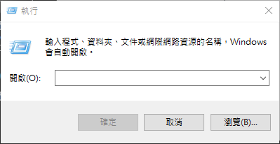

windows常用指令 Veröffentlicht am 2018-06-23 Bearbeitet am 2020-04-29 本文章是作者自己筆記用，會不定時更新指令開啟指令方式 鍵盤開始鍵 + R 輸入常用指令services.msc ( 本機服務設定 ) regedit.exe ( 登入檔編輯程式 ) mstsc ( 遠端桌面 ) eventvwr.msc ( 事件檢視器 ) control ( 控制台 ) taskmgr ( 工作管理員 ) secpol.msc ( 本機安全性原則 ) gpedit.msc ( 本機群組原則編輯器 ) certmgr.msc ( 憑證 ) explorer ( 檔案總管 )notepad ( 開啟記事本 )mspaint ( 小畫家 )sticky notes ( 便簽 )